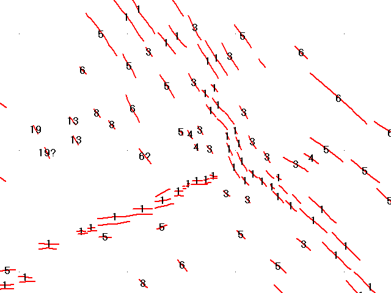

 Geology options on map
window toolbar.
Geology options on map
window toolbar.- Magnetic anomalies.
- Label anomalies, using Label all records option on Plot button of Table display window. You must be zoomed in for this to be effective.
Anomaly picks are based on interpretations of profiles obtained by towing a magnetometer behind a ship.